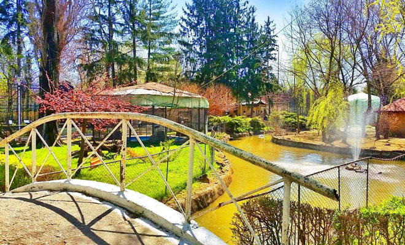
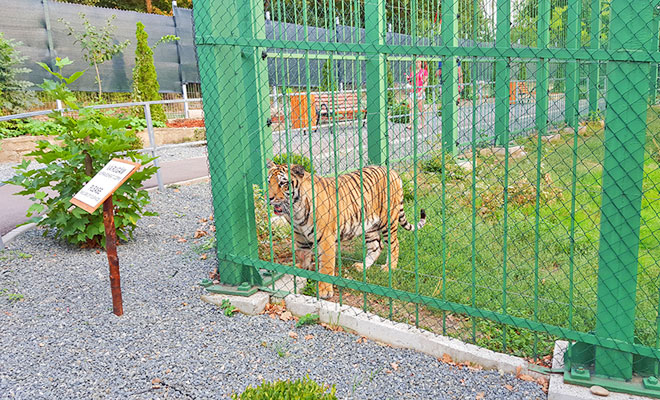
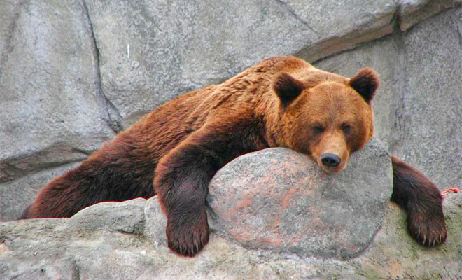
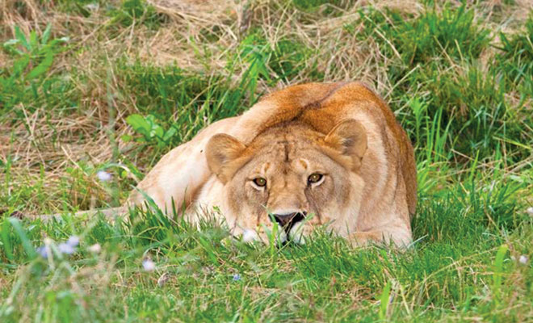

Gradina Zoologica din Timisoara a fost inchisa pentru o perioada destul de lunga de timp pentru a se efectua lucrarile de amenajare si crearea unor conditii cat mai aproape de natural pentru vietuitoarele de aici. In acest moment, Gradina Zoologica ofera vizitatorilor spatii de recreere in aer liber, moment in care acestia pot admira unele dintre cele mai cunoscute animale domestice si salbatice. Cu toate acestea, aici vietuiesc animale originare de pe continentul americii de Sud, in Africa, Australia sau Europa. Asa ca, daca va asteptati sa intalniti specii numai cu specific romanesc, ei bine, va inselati… Lista animalelor ce traiesc pe teritoriul Romaniei este completata de o lista la fel de lunga de animale exotice cu alte origini. Gradina Zoologica din Timisoara poarta numele de Padurea Verde intrucat spatiul creat pentru ca animalele sa poata fi admirate de catre turisti este unul destul de mare, in aer liber.
Amplasata intr-o priveliste destul de frumoasa, Gradina Zoologica din Targoviste reprezinta un punct de atractie atat pentru locuitorii din regiuni, cat si pentru turistii care sunt in vizita in acest oras plin de istorie. Gradina Zoologica din Targoviste se afla situata pe latura de nord a Parcului Chindia, in apropierea turnului Chindiei si Curtii Domnesti, doua repere turistice extrem de importante pentru oras. Suprafata Gradinei Zoologice din Targoviste este destul de generoasa, fiind intinsa pe patru hectare, aflate in proprietatea Consiliului Local din Targoviste. Cei ce o viziteaza se simt cu adevarat incantati de frumusetea animalelor prezente aici, dar si de cadrul natural pe care aceasta il ofera turistilor in fiecare clipa, un spatiu plin de verdeata si de aer curat. Speciile de animale ce se regasesc aici sunt destul de variate. Prezenta lor vine de departe, de pe mai toate continentele lumii, fiind in unele cazuri specii pe cale de disparitie.
Gradina Zoologica din Galati reprezinta un veritabil punct de interes atat pentru turisti, cat mai ales pentru copiii localitatii. Gradina Zoologica din Galati are o intindere destul de mare, de circa 7 hectare. Aici, iubitorii de animale pot admira o serie de specii rare de animale, fiind bine ingrijite ?i conservate. in prezent, aceasta se afla intr-un proces de reamenajare, fiind destul de bine dotate diferite adaposturi din incinta sa. In plus, iubitorii de echitatie, precum si cei care isi doresc sa ia cateva cursuri in acest sens pot opta pentru cateva ore de calarit in aer liber, caii crescuti in cadrul acesteia fiind destul de bine antrenati, pentru a face fata pana si nevoilor persoanelor începatoare.
Gradina zoologica din Baia Mare s-a inchis din cauza starii jalnice in care traiau animalele, dar si din cauza faptului ca terenul pe care este amplasata a fost retrocedat. Gradina Zoologica din Baia Mare reprezinta una dintre cele mai reprezentative atractii turistice, dar ?i unul dintre locurile cele mai indragite de copiii orasului. In cadrul Gradinii Zoologice din Baia Mare cei interesati pot admira circa 37 de specii de animale, pe o intindere de 2,4 hectare. Din totalul acestora, un numar de 11 specii sunt considerate a fi exotice. Speciile exotice totalizeaza un numar de 22 de animale, iar speciile de animale care vietuiesc pe teritoriul tarii insumeaza circa 200 de animale.
Infiintata in urma cu 3 decenii si administrata de Consiliul Local, Gradina zoologica Bucov se afla la iesirea din Ploiesti. Pe o suprafata de 16 hectare, gradina adaposteste specii dintre cele mai diverse: ursi, lei, jaguari, canguri de talie mica, maimute pavian, sconcsi, ratoni, manguste, cerbi carpatini, caprioare, tapi romanesti, ponei, pekari, porci de apa, lame, wattussi, precum si diferite specii de pasari: rate exotice, ibisi, gaste cu obraji albi, fazani, papagali, pauni, prepelite etc. In interiorul gradinii se afla Casa Memoriala Constantin Stere, care este deschisa publicului pentru vizita. De asemenea, in interiorul parcului mai exista un lac pe malurile caruia vizitatorii pot sta la un gratar sau pot inchiria barci si hidrobiciclete pentru o plimbare romantica pe lac.